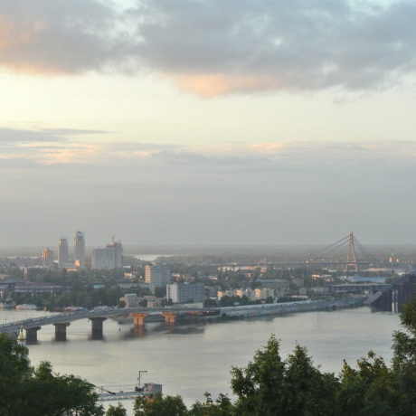
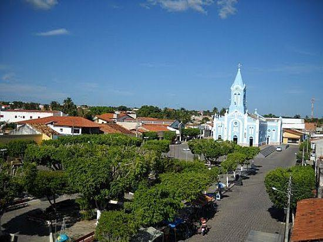

-
Kiev, Ucrânia
Compre esta obra de arte como NFT

Artista
Natalia Dolgushina, produtora de conteúdo
Kyev (ou Kiev), capital da Ucrânia, é uma grande cidade localizada às margens do rio Dnipro. É claro que ninguém em sã consciência nadaria no rio, a menos que tenha crescido lá, e nesse caso provavelmente já tentou em algum momento. Os verões são quentes aqui e os invernos são frios, mas o outono e a primavera são absolutamente incríveis.
A cidade em si é uma mistura de arquitetura pré-revolução, pós-guerra e soviética, toda ela salpicada de varandas modificadas. Se estiver na margem direita do Dnipro, a paisagem é difícil de percorrer para quem anda de bicicleta e quem usa salto. A margem esquerda é considerada muito menos interessante e prestigiosa, mesmo por pessoas que vivem na periferia da margem direita.
-
Criccieth, País de Gales
Compre esta obra de arte como NFT

Artistas
Steffan Warren, editor-chefe
Kseniya Glagoleva, gerente de projeto
A ruína medieval do Castelo de Cricieth tem vista para a cidade abaixo de uma rocha que se projeta para o mar. Acredita-se que tenha sido construído por Llewelyn, o Grande, no século XIII. Cerca de 900 anos depois, a auto-intitulada *Pérola de Gales nas margens de Snowdonia* tornou-se um destino turístico popular durante os meses de verão.
A uma curta caminhada da estrada do castelo, você pode desfrutar do melhor sorvete do mundo no Cadwalader's, cujo ingrediente secreto, segundo rumores, são algas marinhas de origem local. Outra reivindicação à fama é o fato de que Criccieth ganhou o prêmio *Wales in Bloom* por cinco anos consecutivos por suas espetaculares exibições florais pela cidade. Foi também a casa de David Lloyd George, o único galês a ocupar o cargo de primeiro-ministro do Reino Unido.
-
Berea, EUA
Compre esta obra de arte como NFT

Artista
Travis Turner, autor e editor
Berea é uma pequena cidade localizada na parte central do Kentucky. A cidade é cercada por belas florestas e campos. É conhecida como a capital do artesanato do estado, e os visitantes encontrarão muitas oportunidades de compras: lojas com bijuterias artesanais, velas, artigos de madeira, galerias, ateliês de vidro e muito mais. A cidade realiza um festival anual que celebra o "pão de colher", um prato local feito com pão de milho e servido com uma colher de pau.
No entanto, provavelmente é mais conhecido pela faculdade local. O Berea College foi fundado em 1855 e foi o primeiro colégio no sul a ser racialmente integrado, bem como o primeiro a ser misto. De forma um tanto singular, não cobra mensalidades - todo aluno recebe uma bolsa de estudos integral.
-
Muramvya, Burundi
Compre esta obra de arte como NFT

Artista
Grevisse Kenguruka, editor técnico
Muramvya é uma das 18 províncias de Burundi. Na era do reino, Muramvya era a capital real e em 2007, por causa de sua paisagem cultural e natural, foi adicionada à Lista Provisória do Patrimônio Mundial da UNESCO. Está localizada no centro de Burundi, entre as capitais políticas e econômicas do país.
O clima é bastante frio à noite, mas durante o dia, você pensaria que está no céu. A 2.665 metros (8.743 pés) acima do nível do mar, o Monte Teza é um dos lugares mais frios da província. Mas essa brisa fresca permite uma das maiores plantações de chá e café do país, que representam a maior parte das exportações do Burundi.
O Parque Nacional de Kibira, uma das maiores reservas de vida selvagem para macacos, se sobrepõe a quatro províncias, incluindo Muramvya. Este Parque Nacional encontra-se no ápice das belas montanhas do Congo-Nile Divide, variando entre 1.550 e 2.660 metros de altitude. Está repleta de uma bela vegetação e fonte para os vários rios e riachos que fornecem água em todo o país.
-
Mauriti, Ceará
Compre esta obra de arte como NFT

Artista
Alessandra Patrício, auxiliar de laboratório
Mauriti, uma encantadora cidade localizada no estado do Ceará, Brasil, possui uma população calorosa e acolhedora de aproximadamente 35 mil habitantes. Com uma área territorial de cerca de 674 km², a cidade exibe uma atmosfera tranquila e hospitaleira, proporcionando um ambiente agradável para seus moradores e visitantes. O clima predominante em Mauriti é o semiárido, típico da região nordeste do Brasil. As temperaturas costumam ser elevadas durante a maior parte do ano, com verões quentes e secos. Os invernos são amenos, mas ainda assim caracterizados por dias ensolarados. A chuva é mais comum no período de fevereiro a maio, trazendo alívio para a aridez e revigorando a paisagem local.
Entre suas riquezas naturais, a cidade abriga belezas como a Cachoeira do Paulo, com seus encantos cênicos e águas refrescantes, tornando-se um destino de lazer apreciado pelos moradores e turistas. Com suas festas tradicionais e festivais culturais vibrantes, Mauriti preserva suas tradições e enriquece a experiência dos que têm a oportunidade de explorar seus encantos. Mauriti é um destino singular para os amantes da cultura nordestina, oferecendo um ambiente acolhedor, paisagens exuberantes e uma conexão genuína com a autenticidade do sertão brasileiro.